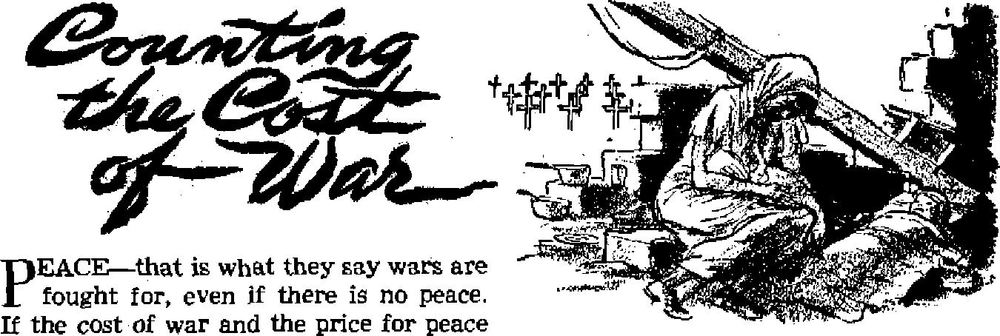
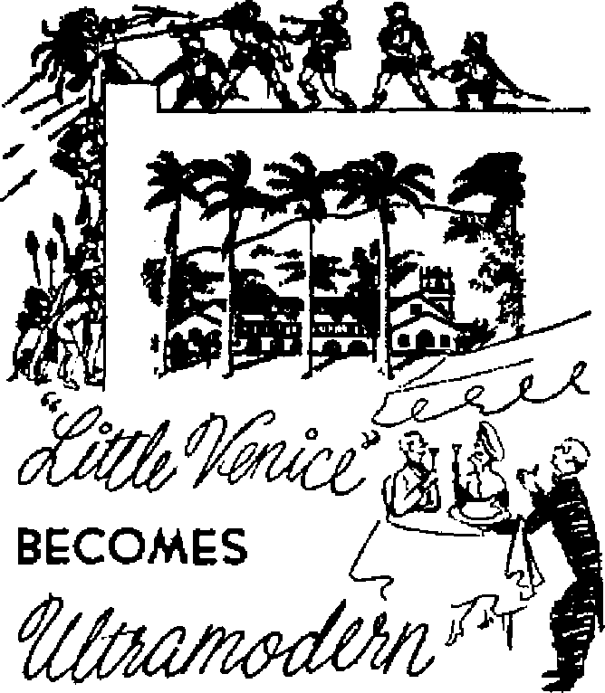
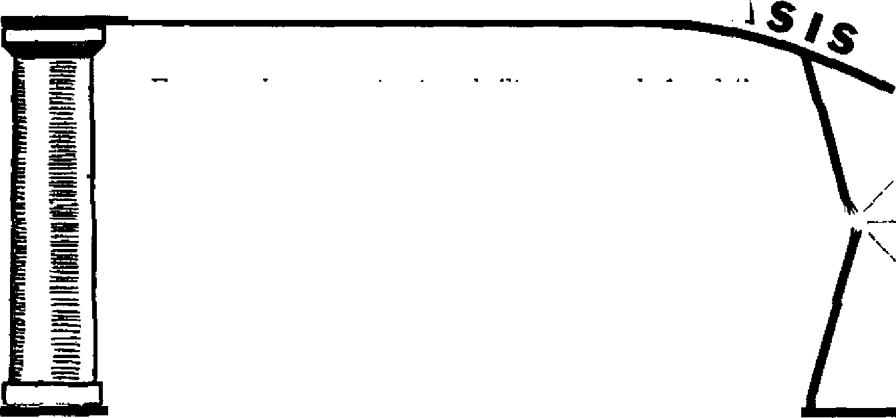

A REUNION IN THE CHRISTIAN HOPE? Should religion’s prime interest be in improving political conditions or in preaching truth?
Counting the Cost of War
A high price for so little peace
Dueling:
The Bloodstained Badge of Honor
A selfish, pride-inspired, murderous custom
They Reject Sound Discipline
Ignoring the only right way to Christian unity
DECEMBER 22, 1954 semimonthly
News sources that are able to keep you awake to the vital Issues of our times must be unfettered by censorship and selfish Interests. “Awake!” has no fetters. It recognizes facts, faces facts, is free to publish facts. It is not bound by political ambitions or obligations; it Is unhampered by advertisers whose toes must not be trodden on; it is unprejudiced by traditional creeds. This journal keeps Itself free that it may speak freely to you. But it does not abuse its freedom. It maintains integrity to truth.
"Awake I*’ uses the regular news channels, but is not dependent on them. Its own correspondents are on all continents, in scores of nations. From the four corners of the earth their uncensored, on*the-scenes reports come to you through these columns. This Journal's viewpoint is not narrow, but is international. It is read in many nations, in many languages, by persons of all ages. Through Its pages many fields of knowledge pass in review—government, commerce, religion, history, geography^ science, social conditions, natural wonders—why, its coverage is as broad as the earth and as high as the heavens,
"Awake 1” pledges itself to righteous principles, to exposing hidden foes and subtle dangers, to championing freedom for all, to comforting mourners and strengthening those disheartened by the failures of a delinquent world, reflecting sure hope for the establishment of a right* eous New World.
Get acquainted with “Awake !H Keep awake by reading “AwakeI1 *
Published Semimonthly By WATCHTOWER BIBLE AND TRACT SOCIETY, INC.
117 Adams Street Brooklyn 1, N. Y„ TL S. A
N, H. Knorr, President Grant Suites, Secret ary
Printed this Issue: 1,300,000
Five cent* a copy
LsngoaiM to which the Nagaikt k pibihh«l: Soaiciotithly—Af. Luans, Engluh, FhmUb,, French, German, Hcdlandlsh, Norwegian, Spanish, Swedish. Monthly—Danish, Greet, PortUjuef*!. Ukrainian.
Offices Yearly subscriptioti Rate
Amiri's, U.S., 117 Adama 3U Brooklyn 1, N.Y $1 Aoitralli, 11 Beresford Rd,, strathfield, N.8.W, 8e Canada, 40 Irwin Ave., Toronto 5, Ontario England, 34 Craven Terrace, London, W. 2 7a Stith Atriea, Private Bag, P.O. Blindsfonteln,
Transvaal 7s
Remittances should be sent to office in your country In compliance with refutations to guarantee safe delivery of money. Remittances are accepted at Brooklyn from countries where no office is located, try international none? order only. Subscription rales In different countries are here stated in local currency. Not Ise of expiration (with renewal blank) l.q sect at least two issues before subscription expires. Change of attftss when sent to our office may be expected effective within one month, fiend your old as well ae new address.
EZtmd as second-class matter at Brooklyn. N. Y.
Act of Marek 3, 1879. PrintaJ Id U.S.A,
CONTENTS
A Reunion In the Christian Hope?
Not Through the World Council!
Fishing in the Lair of the Marine-Cat
“Little Venice” Becomes Ultramodern
Dueling: The Bloodstained Badge of Honor
What an Amazing Fabric—Leather!
Religion of Modern Israel
“Your Word Is Truth”
The American Legion and the Girl Scouts 27
Index to Volume XXXV of Awake!
Christ—the Hope of the World
T IE main theme of the World Council of Churches’ recent second assembly, held in Evanston, Illinois, U. S. A., was “Christ—the Hope of the World." The shocking controversy that surrounded that theme shows just how divided today’s religions are on even such basic matters as the Christian hope. The two contradicting views were presented at the assembly’s opening sessions by Professor Edmund Schlink of Heidelberg, Germany, and Professor Robert L. Calhoun of the United States.
Edmund Schlink pointedly said: “The New Testament further announces that great tribulation shall befall the world before it finally does pass away—war and hunger, the disintegration of all community, mass destruction and natural disasters are to be expected. We are told to watch for such things to occur. Wherever, then, people speak of the coming Christ as the hope of the world, they are always speaking of the end of the world.... Even among Christians many have grown deaf to the proclamation of the world’s end. They dismiss it as mere Judaic-apocalyptic thinking. Yet it is clear that today people are afraid that humanity is doomed.... There is an essential difference, however, between the fears of modem men and the New Testament proclamation of the end of the world.... in the New Testament the calamities of the last days are not merely human misdoings nor are they the consequence of human disobedience. They are rather the activity of God himself. In the New Testament it is God who will bring the end of the world. ... If in our thinking about this subject we place the emphasis on the preservation of this threatened world, then we shall miss the point of our assembly theme completely. . . . The name of Christ is taken in vain if it is used as a slogan in this world’s struggle for its own preservation.’’
He further said: "Jesus Christ then is the hope of the world not because he guarantees the preservation of this world, but because he liberates us from al] the binding ties of this world. . . . Christ is the hope of the world insofar as the world no longer remains the world but is transformed through repentance and faith. . . . So through the gospel here in this world Christ is gathering his people to live together with him in the new life. . , , Fo this reason the days in which we live aj the last days."
He continued: “That these are, in fact, the last days may seem to be disproved by the fact that nearly 2,000 years have passed since the coming of Jesus Christ. Many people no longer believe in the promise of his future coming. But the length of time is no refutation of his promise. It is not a sign of God’s weakness, as if he could not if he wished bring to fulfillment what
he has promised through Jesus and the apostles. Rather, this time in which we live is the time of God’s patience, God wills that many shallbe saved. . . /then shall the world pass away and then shall the new creation appear as if emerging from a hiding place.”
Today, he said, “we are faced with a new kind of post-Christian man. ... he has separated his new freedom from submission to Christ. He has usurped the control of nature. He has himself set about tp establish the eternal.kingdom of peace on earth. He no longer waits for Christ to come. . . . For those who hope in Christ, however, the tumult of this world is a sure sign of Christ’s coming. The world would not tremble if he were not the victor. The wintry gales that are now howling over the world are the signs of the coming springtime. The sicknesses of our time are the birth pangs of the new creation.”
What did the World Council think of these thought-provoking words that contain a great deal of truth ? One critic of the Biblical hope said Professor Schlink’s discourse “hardly met the average churchman’s idea of the promise which that Hope holds for him.” The Christian Century referred to “the theological opacity of much” of what Schlink said, and commented on the fact that, as a result of this and the poor acoustics and extreme heat, the latter half of this “opening plenary meeting was mainly remarkable for the size of the stream flowing out the exits.” It said the Schlink speech “came as a shock to many American delegates” who thought they had long ago “escaped” such ideas.
Another comment was that Professor Robert L, Calhoun of Yale Divinity School “put the Christian Hope in somewhat more acceptable terms.” What was his view? That the Kingdom could come here and now, by man’s efforts, not God’s. Of materialistic Americans he said: “When we think of hope, it is usually hope for a better life tomorrow, for our children, for the increasing number of those who depend on us and for whom we feel responsible. In this context, much of our theology has come to lay special stress on ethics and to be far less confident about eschatology,” which is the ultimate hope, Christ’s second coming and man’s final destiny.
Thus they forsook their high mission of preaching Christ’s kingdom, and watered that word down to apply it to human goals. Their theology, he said, “has found signs of the breaking in of God’s Kingdom here at home in the advancing conquest of diseases and hunger, the abolition of chattel slavery and the extension of Christian conscience from private to public affairs, ... It does not forget the final judgment nor the life everlasting, but its chief confidence has been in God’s grace from day to day.”
In their view it must be pathetic that Jesus did not think of this, putting his chief confidence in bettering the Jews’ political conditions under Rome, abolishing the slavery, reducing the oppressive taxation, attacking political and social problems, They must think it a shame that Jesus chose to obey his heavenly Father, preaching his second coming and making this foremost work so important that he had no*time for anything else. They might think it pathetic that Jesus took that right course, but true Christians do not! True Christians are indeed joyful at the works done by Jesus, think nothing could have been more important, and continue that same work, pointing to signs of the nearness of that kingdom, and completing the preaching of that kingdom now.
Calhoun’s theory is not proving itself in practice. Thus he admits that in today's atom-charged world “there is no sign that earthly history is being progressively purged of evil and steadily nearing per-
fection,” and he further admits that “a hope that can rightly triumph over such hydra-headed perils must envisage in some sense ‘a new heaven and a new' earth.’ ” But he says: “Again it is God and not we who can know what this new order will be. Too confident speculation is out of place, and we American Protestants for the most part have sought to avoid it.” But God has explained the "new order” in his Word; so why is “speculation” necessary? It is their practice of deliberately avoiding what God’s Word says that, as Calhoun puts it, has often lost for them the faith that “the church through the centuries” has had in “the age to come.”
What does this mean to you? It means that you must be alert, for many of your clergymen have little confidence in the Christian hope given in the Bible, and are, therefore, not concerned with teaching it to you. That is one reason for so much religious illiteracy today, and another reason why so many people are examining their Bibles on their own, and, as a result, are gaining a better knowledge of Christian truth. For more information on the Evanston meeting see the next article.
COUNTING delegates, ob-servers, staff members, wives, husbands and the press, well over 2,400 people from forty-eight nations gathered for the second assembly of the World Council of Churches that met last August in Evanston, Illinois, U. S. A. This assembly received massive public
Art religion! right? Should they gat together to do o better fob? How great It th* divltion that exlaW among thorn? Sho»ld their Intemt bo In improving political condition* or In preaching the truth, and why? Where do tholr effort* at unity fall thort? Doe* thi* affect the quality of their wonhip? And what thou Id It moan to you?
only Son, our Lord, who is the Hope of the World; and in the Holy Spirit.” When asked “Why have you come?” their answer was: “We have come to worship God.”
Yet the assembly proved that they were far from unity on how God is to be worshiped, and its wide
ity, was marked by impressive pageantry, and considered the views of noted religious leaders. In the evening of its first day more than a hundred thousand persons attended a spectacular “Festival of Faith” in Soldiers Field on the lake front in downtown Chicago.
Here a black-robed pastor asked: “Who are you to have come here?” The audience answered in chorus: “We are Christians. We have come from many different traditions.” “What is it to be Christian?” asked the pastor. The answer the audience gave: “It is to believe in God the Father, in His publicity merely emphasized that division. Not only were the delegates miles apart on such matters as baptism, communion and the ordination of ministers, but they could not agree even on the meaning of the assembly’s main theme, namely, how ‘Christ is the hope of the world.’ A European view is that the Christian hope Ues mainly in Christ's second coming. Their critics say they should pitch in and improve society here and now. The European view is that Christ meant what he said, and that the wickednesses of our time are the birth pangs of the new creation. The general
American view, satisfied with its materialistic accomplishments, is that man can bring In the Kingdom himself.
Two Views of the Hope
This issue so sharply divides today’s denominations that many churchmen publicly bemoaned the World Council’s choice of the subject “Christ—the Hope of the World.” In their struggle to get the various denominations together they had “blandly detoured” doctrine as being unimportant. Yet, if they cannot agree on such a basic matter as how Christ is the world’s hope, they might as well fold up their unity plans, admit their divisions, and forget the idea of trying to convince the world that all religions are the same anyway.
For at least two years a commission of Christendom’s most learned theologians, scholars and historians of doctrine had been at work on composing an acceptable statement on how Christ is the hope of the world. Then assembly delegates and consultants, meeting in fifteen separate groups, discussed the theologians’ conclusion. After this a co-ordinating committee worked several days, merging the conflicting views into a statement that, on August 25, was presented to the assembly. Only after three rewordings and re-presentations was the statement finally accepted for transmission to the churches.
Had they really agreed on the matter? No. The delegates could not agree on whether the Christian hope for the kingdom of God can be fulfilled by man in this world or only by Christ. Bishop Lilje, chairman of the co-ordinating committee, explained that the report attempts to combine both views. The “humanistic” view has been referred to as “the Kingdom that is now,” the Biblical view as “the Kingdom that is to come.”
The prophet long ago wrote: “Behold, the days come, saith the Lord Jehovah, that I will send a famine in the land, not a famine of bread, nor a thirst for water, but of hearing the words of Jehovah.” (Amos 8:11, Am. Stan. Ver.) The World Council indeed evidenced such a famine. The report of the advisory commission on the main theme said: “We find that the note of joyous affirmation and radiant expectancy which should mark a statement of the Christian hope does not sufficiently illuminate the report . . . We are not agreed on the relationship between the Christian’s hope here and now, and his ultimate hope.... we are not satisfied with the presentation in the report of the so-called ‘rival hopes.’ ” In the World Council’s Central Committee, meeting shortly after the assembly closed, President Henry Knox Sherrill said something is wrong when a Chicago Tribune headline can blare: “World Council Split on Second Coming of Christ.”
The assembly officially said, however, that considering the greatness of their theme, the “sharp differences in theological viewpoint” that were expressed “should occasion no surprise.” One commentator added: “Indeed, so grave are the doctrinal issues that any progress toward their reconciliation would be spectacular.” But is it not more spectacular to see men who consider themselves competent teachers about Christ prove unable to agree even on what hope he offers for the world? and, even further, to say that such disagreement should be expected? Is that the view you want your religious leaders to have?
Pinning Jesutf Name onto Other Hopes
The World Council, which could not agree on how Christ was the world’s hope, had much to say on other matters. It dealt with labor unions, farmers’ groups, professional associations, the hydrogen bomb, what the nations owe to one another, and how the U. N. should operate. It made a
strong declaration of principles on the racial Issue, proposed that all weapons of mass destruction be prohibited, and made other suggestions regarding international agreements.
Why does the World Council, which can agree on such worldly, material matters, remain so greatly divided on spiritual, lifegiving matters? Why can they not agree on what the hope in Christ is? Because they want Christ to fit their ideas on these subjects, rather than adjusting their ideas to fit his instructions. Many apparently do not believe he meant what he and the apostles said about remaining separate from the world and about the righteous conditions to come under the blessings of his literal kingdom.—John 15:19; 17:16-18; James 4:4; Matthew 6:9,10; 2 Peter 3:13.
How can Jesus be the hope of the world to men who will not follow his example? and who consider their political and material accomplishments of more importance than the Kingdom about which he preached? Professor Robert L. Calhoun of Yale Divinity School admitted at the World Council’s opening session: “A major part of our academic Protestant theology itself came to be concerned less with the structure of Biblical and traditional doctrines and more with the task of redressing injustice in the new industrial and political scene.” But this was not Christ’s course. His concern was not with political affairs, but with spiritual matters; not with redressing social injustices, but with giving men contentment and life; not with freeing' their bodies, but with freeing their minds. That job has not been finished to this day, and until it is finished what business would Christ’s followers have in spending their time in other fields?
The World Council can reach agreement on the questions Jesus ignored, but it cannot agree on the things he stressed.* Yet which is the more important? If you or your religious leaders disagree with his choice in this matter and think he should have dealt with political, social and economic matters instead of life-giving spiritual ones, then you are not recognizing his authority, and if you do not recognize his authority, how can you possibly claim the name “Christian”? A true Christian is more than a mere believer in Christ, he must also be a follower.
Rejecting Sound Doctrine
But the World Council thinks that all the religions that bear the name “Christian” should work together, no matter what their doctrines. Many of the World Council’s supporters say that even trying to agree on doctrine is one of the organization’s flaws, that it should ignore doctrine and just work in mutual evangelism and political and social activity. Even the little bit of doctrine that was brought into the World Council's meeting irked
* The September 22 Christian Century commented: "While a reassuring humility marked the Evanston approach to every question, perhaps this difference between the sessions which dealt with theological matters and those given to social Issues may best be summarized by saying that the latter moved with a confidence the former never attained,"
some delegates. Said the Christian Century, September 22: “Could it be that if the World Council studied its theology less dogmatically and more in action, from the saddle, so to speak—that the council would last longer and go farther? Certainly if it does not find a new manner, if four more assemblies handle theological and dogmatic th'emes as badly as this one did, the outlook is not encouraging. Give the World Council about four more such theological or dogmatic main themes—say, the nature of Biblical authority in 1960, the nature of the church in 1966, the nature of salvation in 1972 and the creedal basis of the council’s own being in 1978—and if the world itself hasn’t blown up by that time the council most certainly will.”
Before the assembly opened theologian Reinhold Niebuhr said that it is silly to advertise Christianity by insisting on what, to the secular-minded, will seem “fantastic,” that is, Christ’s second presence, ‘‘What would be more to the point,” he said, “is to bear witness to our faith in terms ... of watchfulness and soberness ... of faith and of love—which will appeal to a world in the night of despair as having some gleams of light in it, derived from the ‘Light that shineth in darkness.’ ”
But the light that shines in this world’s dark night of despair is Christ Jesus, and Niebuhr would put even that light out. (Isaiah 49:6; John 1:9) The wisdom of God may seem foolish to some men who through their “wisdom did not get to know God,” but it provides salvation because “God saw good through the foolishness of what is preached to save those believing.” —1 Corinthians 1:21, New World Trans.
The theologians who do not want Christ’s kingdom preached put themselves in the same category as the Jewish religious leaders who considered it ‘fantastic’ that the apostles should preach Christ at his first presence. Those ancient leaders wanted a political messiah, one who would restore to them a kingdom in the literal city of Jerusalem. Today’s religious leaders follow the same pattern, wanting a kingdom that will solve the world’s political and social problems, but not the real kingdom that the Scriptures show will soon abolish wickedness and bless the earth with lasting peace.
Theologian Edmund Schlink, in the World Council’s opening address, warned that the council must be concerned not only with methods of evangelism, but that “the whole assembly must concern itself with the content of evangelism.” The World Council encourages the preaching of the “gospel” throughout the world, but the Evanston meeting showed that its members have two kinds of “gospel.” The World Council tells how to evangelize, but not what is truth; what the U. N. can do, but not what religions should teach; what responsible society is, but not which view about God’s kingdom is right.
Not Through the World Council!
Should religions that cannot agree on such things unite? No, because the Christian is reminded that just “a little yeast ferments the whole lump,” and he is specifically instructed: “Do not become unevenly yoked with unbelievers. For what partnership do righteousness and lawlessness have? Or what fellowship does light have with darkness? ‘Therefore get out from among them, and separate yourselves,’ says Jehovah, ‘and quit touching the unclean thing,’ ‘and I will take you in.’”—1 Corinthians 5:6; 2 Corinthians 6:14, 17, New World Trans.
In summary, then, why can the World Council not bring a reunion in the Christian hope? First, because it is not sure what that hope is. Second, because it is going about achieving unity in the wrong way, namely, by making compromise
agreements rather than firmly pointing the way to right worship and sound doctrine. And third, because it is prone to reject doctrine whenever conflicts over what is right pose a threat to its organizational unity. Thus it becomes more concerned with denominational unity than with doctrine, more with size than with truth.
According to the Archbishop of Canterbury, the ecumenical movement (of which the World Council is a part) is “a seeking by all the churches of what cannot be had in any other way—a new manifestation of Christ to His church and so to the world which He died to save.” That new manifestation is present, but not through taking an agreeable'average of all their doctrines. Christ’s first manifestation did not come through an averaging out of the conflicting doctrines of the different Jewish sects, nor does the present one come through averaging out the various denominational viewpoints of today. A proper following of the Hebrew Scriptures (which were too often ignored by the early Jews) would have led the people of the first century to Christ; a proper following of Jesus’ instructions conveyed through the Greek Scriptures (which are too frequently ignored by modem "Christian” clergymen) leads to right worship and a reunion among those who will accept the true Christian hope today!
You can benefit from that manifestation of Christ, coming to unity with those who accept the true hope, if you win make a faithful and diligent study of God’s Word, considering its specific instructions as more important than man’s theories, his interdenominational activities, or his political accomplishments. It does work, but the only way you can prove it does is to try it yourself. Will you do so?
(For An explanation of why the religions are m divided, see the article "They Reject Sound Discipline,’* on page of this magazine.)
were only dollars and cents, the figure alone would be staggering. But the price is infinitely higher. Money can be replaced, cities can be rebuilt, the war-ravaged earth will renew itself, but not so the tens of mil
life lost in battle represents a tragic toll.
Upw much is a man’s life worth? On today’s market, very little. But in the eyes of God it is precious. With this in mind let us consider the cost of war and the price
lions of lives sacrificed to the god of war. for peace.
These are gone and no man or organizations of men can bring them back. Each
Of all the nations of the world France has suffered the greatest losses in human
life during the last three centuries. During the seventeenth century she spent sixty-four years at war; in the eighteenth century, flfty-two years; in the nineteenth century, thirty-two years. Of the 1,700 battles fought in Europe during this period France engaged in 1,079. The tabulation of casualties for only a few of the major wars gives <a partial picture of the ghastly horrors of history. The casualty list numbers more than 10,469,710. But even this price is small, to compare with the suffering imposed upon civilian populations and noncombatants. How many women, children and old men, if not butchered and killed outright, have been maltreated and tortured and left to suffer the rest of their lives will never be known. This, too, is part of the cost of war and. the price for peace.
The cost and price also includes starvation and disease. Multitudes died from these causes when Athens, Syracuse and home were besieged in ancient times. Over 30,000 people lost their lives in the sacking of Magdeburg. Another 20,000 to 30,000 starved to death in Genoa during the Napoleonic wars. In 1830 Poland lost 326,000 of its population due to disease. Typhus, cholera and typhoid reaped havoc on both the combatants and noncombatants. All of this men paid for peace, and still no peace.
The cost of war goes up and the price for peace with it. All the wanton destruction of previous wars fades into insignificance when compared with the conflagration during 1914-1918. About 1,700,000,000 people were in some way involved. For four years nations slaughtered each other. The war ended only in blood and mud. The price was colossal. The casualty list claimed 37,508,686 victims. In single battles whole armies were butchered to pieces. The British lost 60,000 on the first day of the
attack at Somme. The French lost nearly 500,000 lives and the Germans half that number at Verdun in 1916, Epidemics like the Spanish flu, directly attributed to war, claimed the lives of millions more. Four million Armenian, Jewish, Syrian and Greek civilians were massacred. One third of the population of Poland was wiped out. Two million Russian civilians perished; 800,000 German and nearly 1,000,000 Au&-trian and Serbian civilians died. Among fishermen and sailors there were nearly 100,000 killed by mine explosions. AH of this was the cost of war and the price for peace, but still no peace.
World War II came along. Prices went up and so did the cost of war and the casualty list—to 44,835,196. Vatican sources set the number even higher. The total dead, they say, was 22,960,000 and the number wounded, 34,400,000. And still no peace. Because soon to follow was the Korean war-
Accordmg to the United Nations report of August 7, 1953, the United States and its allies had a casualty list of 455,000; the losses of their foes were estimated as three times as great. United States Secretary of State John Foster Dulles declared- “The North Korean army is virtually extinct and the Chinese arid North Korean Com-
000 casualties, and of the 10,000,000 people of North Korea one out of every three has died from war ravages and inhuman neglect, which their rulers have imposed.”
Eight Limited “Hot Wars”
The major wars have been squelched, at least, for the time being. But continuing at the present time are eight little hot wars where lives are being sacrificed almost daily. The world is certainly not at peace. But this is not a new phenomenon. In 3,361 years of recorded history, there have been
3,134 years of war and only 227 years of peace. What a tremendous waste of life for something still not attained!
Dollar Cost of War
The high cost of war is not only in life but in dollars and cents. These figures represent the burden of war upon humanity. The nineteen years of Napoleonic wars were said to cost $15,000,000,000. If to this there is added the cost of all other wars thereafter, both small and great, up to 1914, there was at least $40,000,000,000 spent to destroy life. And how does the cost of World War I compare with this? It cost over eight times as much as the previous two hundred years of wars, or $337,980,579,657! On July 1, 1946, there were still $15,000,000,000 of World War I debts unpaid. And how does this compare with World War II ? The cost of World War n ran into astronomical figures, amounting to more than a thousand billion dollars, $1,160,991,463,984, or more than three times as great as the cost of World War I. Still this price did not buy peace.
The dollar cost to the United States of the Korean war ran upward of $20,000,000,000, seven months before the war ended. These billions were strictly the direct cost in Korea itself. Indirect costs resulting primarily from war in Korea are much greater. And, too, what the war cost the Communist world can only be imagined.
War, what woeful waste! Waste? Yes, when we stop to think that the blood spilled and the money spent have not yet bought peace! War is waste, when we know that it cannot bring or buy peace. Think of the untold billions that not only the East but also the West is devoting to war and war preparations. What a paradise this earth would be if all this effort were converted to peacetime pursuit and development! The price of one modern heavy bomber would build a modem brick school in more than thirty cities. There would be new schools in all the major cities of the world, if such monies were devoted to constructive purposes. The cost of aircraft destroyed in the second world war and in the Korean and Indochinese wars was enough to have easily built hospitals fully equipped for any emergency throughout the world. The money expended on ammunition would have supplied the nations with modem highways. The money spent on tanks would have equipped farmers everywhere with trucks and tractors to till the soil. The millions hungry for wheat and rice could have been fed at the cost of the fighter planes junked or destroyed during the last wars. The cost of a single destroyer would build new homes that could house more than 8,000 people. Homeless ones could have been housed, and slums could have been cleared away for the price of the ships sunk in battle. All of this has been sacrificed to the god of war without bringing peace.
Man-made wars can never bring peace. Man himself is no peacemaker, as the above record clearly shows. Selfish man is a waster and a destroyer. Wars will cease, peace will come, but not in man’s way. “The God who gives peace will crush Satan under your feet shortly,” and with the crushing of Satan at Armageddon will come peace. The woeful conditions upon the earth, “wars and reports of wars,” nation rising against nation and kingdom against kingdom, food shortages, diseases, sorrows and wholesale murder are a sure sign of the end of this Satanic system and that peace through the kingdom of God by Christ Jesus is near at hand. In Jesus’ words: When you see these things, “raise yourselves erect and lift your heads up, because your deliverance is getting near.” —Romans 16:20; Matthew 24:6, 7; Luke 21:28, New World Trans.
Fishing t*tVvcV“MARI!
By ’‘Awakef* correspondent in El Salvador
(rt XARINE-CAT” is what 1V1 he Is called by the sun* toasted fishermen who ply the brinish coastal waters of El Salvador, but to you and me he is a man-eating shark. He can be seen at night in the light of the loading crane off the pier at Acajutla—not all of him,
but just a quick spine-chilling glimpse as a huge, shiny-black dorsal fin clips the water in a faint instant, so quickly, so noiselessly that you may rub your eyes in disbelief until suddenly a foamy wake and a longer glimpse of something strange and dreadful drive home the point that your eyes have not betrayed you. You may look in vain for minutes into hours without seeing him again, but the excited chatter and wide-eyed stares of the dock hands let you know that they, too, have seen him, and all know only too well that beneath those lazy, foamy swells lurks the sleepless marine-cat.
Right now at my elbow is the dried jawbone of a marine-cat whose over-all length was equal to two medium-sized automobiles parked bumper to bumper. His sawlike teeth are so arranged in rows in upper and lower jaws as to number about two hundred. His hide, not slick and slimy like that of most fish, is as tough and abrasive as emery cloth. The oil from his liver brings a high price, and, feared though he is, he is relentlessly fished out of his ocean home and his flesh is sold on the market daily.
<[The marine-cat is not the only monster of the deep whose liver is prized by fishermen; he has a cousin whose meat is sweeter and far more edible and whose liver yields much more oil than that of the man-eater. His hide is so rough and tough that he is called by the fishermen, in their own language, “Sandpaper." Yet “Sandpaper's" meat is highly prized for its mild flavor. The two dorsal muscles on each side of his spine are neatly cut free and lifted out to be sold on the spot in the form of two six-foot tenderloins as thick as
fence posts. Anxious buyers line the dpck in their eagerness 40 buy this choice delicacy.
<^Yet Salvadoran gourmands pass up the “Sandpaper" in preference to a still fl ner-tasting d enizen
of the blue pacific. This is the sawfish—a marine monster that comes as big as the man-eater, but has, instead of fierce incisor teeth, a four-foot, double-edged saw extending forward out from his head. His flesh is indeed an epicurean delight!
<[ The seafood problem in El Salvador, however, is the problem of getting its price down to what a laboring man can afford. At present the average El Salvadoran must be content to let his family sip broth made from a fish head and spices, or go without fish altogether. Expressly to meet the seafood problem head on, the government has obtained larger boats, and is going into the matter of commercial fishing in earnest,
<[ A trip on one of these fishing boats can indeed be interesting. We are ready at 6 a.m. with our bottle of water, a sack of French bread and three avacados. Our hosts scramble down a salty rope. Being unable to follow them in this manner, we climb down a badly corroded iron ladder into the bobbing boat. We set out to sea, and as the heat of the dsy increases the captain carefully sets the throttle, grasps the loose end of a rope and, with all his clothes still on, flings himself into the ocean, where he rides for a time in the boat's wake, spitting foam. On deck the other men cool off by stripping naked and dousing themselves from head to foot with salt water. Soon it is time to lower the dragnet, and two forty-flve*minute hauls are made with it. Then draglines with two hundred or more hooks are hauled in and rebaited for sharks.
On our returning to port, the ocean is peaceful and quiet. Save for an occasional drifting log loaded with hitchhiking gulls, as far as the eye can see there is nothing to break the sameness of this whole, vast watery expanse. It can impress upon one's mind just how completely natural and peaceful will be the relaxed and unstrained new world, when there will be neither fear nor shortage of food nor inequality in its distribution.
By “Await*!1 con«p©rxienl in Vorieiutla
IF YOU are tired of the hustle and bustle of everyday life and desire to get away from it all, perhaps you, like so manyt dream about the tropics as a perfect hide* away from civilization. Well, stop dreaming and snap back to reality, because even the tropics have gone ultramodern. For a fine example, take the enchanting land of Venezuela, right on top of South America, This country was once a dense jungle, but look at it now—a bustling Pittsburgh or a traffic-jam med New York city. But Venezuela is still enticing.
Travel to Maracaibo, at the very tip of South America, Here one can behold the mighty Andes towering high into the wild blue yonder with all their majestic splendor, They form a giant backbone all along the western side of the continent. At the southwest comer of Venezuela the main body continues on north toward the Isthmus of Panama, but a cordillera, or spur, breaks off and arcs toward the northeast where it suddenly drops off into the sea in northeastern Venezuela, In the “Y” that is formed between the cordiltera and the main range of the great Andes is a huge water-filled basin, Lake Maracaibo, It is 110 miles long and a little over 65 miles wide, almost as large as Lake Ontario, At the north end the lake narrows down to a very narrow outlet and flows into the Gulf of Venezuela and from there into the Caribbean Sea, Where the lake narrows, wc find the second-largest city of Venezuela, Maracaibo, While everything else has changed around here, the climate has not. It is still unbearably hot. The average annual temperature is 82 degrees. The natives sleep in hammocks, because a mattress in this sweltering heat is unthinkable.
What, then, is the attraction in Venezuela? According to history, the Indians were there first. But of the white men, Christopher Columbus was the first to stumble onto this "gold mine’* in search for a shorter route to India and the spices that were to bolster a shaky Spanish economy. On his first trip Cristobol Colon discovered the rich isles of the Caribbean, and on a subsequent voyage he touched South America near the delta of the Orinoco River. He thought it was just another island until he noted that he was sailing in fresh water. Realizing that such a mighty river denoted something bigger than a mere island, and, too, recognizing the river had four mouths, Colon firmly believed that he had discovered the site of the garden of Eden, Actually the Orinoco discharges water into the sea through upward of seventy mouths.
With the tall tales that were brought back to Spain from this so-called garden of Eden, other adventurers sallied forth. In 1499 Alonso de Ojeda skirted the northern coast of Venezuela from the east toward the still unknown west, and bypassing a little peninsula he sailed into the Gulf of Venezuela. Slowly edging around some
islands to the south he suddenly found himself in Lake Maracaibo, Before him lit up a different world, a new world. There were Indians living in thatched huts built on piles out over the water. Many of them were paddling to and fro in canoes, so Ojeda named the place "Venezuela” or “Little Venice”; at least, so the story says.
The Indians that lived along Lake Maracaibo were peace-loving Indians, But the Spaniards, not so. The Spaniards were ambitious and greedy. They saw that the land held out great possibilities. They needed labor to work it and almost before the Indians knew what had taken place they had become the slaves of the white man. Settlements began to grow and slave markets thrived. Africans were shipped in and sold on these same slave markets, Maracaibo, being strategically situated and easy to defend, thrived as a slave station. Why all the commotion? Gold! That “magic” metal that has attracted thieves, pirates and ambitious men to other lands also brought them to Venezuela where the precious dust was found. That was several hundred years ago, but what is the attraction in 1954?
Gold! This time “black gold.” Across from Maracaibo, near the shore line at La Salina, can be seen what interests modem man. Thousands of oil derricks pumping oil. There are over 2,000 producing wells in Lake Maracaibo in the La Salina district alone. In this very same spot the Spaniards of old looked for El Dorado, the city of gold. The Indian legend said it was in the center of a lake. Today cold steel pipes wind their way far beneath the center of this great lake in the Maracaibo basin and the city of black gold is pumped to the surface. Venezuela ranks second only to the United States in oil production and most of it comes from under the lake.
The Indians of this vicinity believed that in years long gone by there was a great flood that covered all the land and everything living perished, that is, everything except for a family of their ancestors, who climbed on top of a high mountain. In time this family built a golden city in the middle of the lake. Since the Indians had no need for gold they never looked for the city. The Spaniards called it El Dorado, the golden city. They pillaged, tortured, enslaved and murdered the Indians in an effort to find the golden city, without success.
Today the golden city is not yellow, but black. With its value many cities in Venezuela have become “golden cities,” with wide paved highways, attractive plazas, magnificent hotels, modem bridges and all the conveniences that the twentieth century can provide. Her riches consist of more than oil. Her soil is still rich in yellow gold and her mountains are heavy with iron ore, too.
As for natural beauty, travel south from Ciudad Bolivar some 150 miles. Here a plateau rises out of an almost trackless jungle to some 6,500 feet above sea level. It is apparently flat on top, with an area of around 300 square miles and jagged, vertical walls that fall away to the jungle floor thousands of feet below. Off the top of Auyan-Tepui (Devil Mountain) plunges the most spectacular waterfall in the world, spilling over the top and barreling downward some 2,648 feet before it strikes a ledge and sizzles off to plunge downward yet another 564 feet to the jungle floor! What beauty! What a roar! The fall is named El Salto Angel, or Angel Falls, not because of its beauty, but after an American who discovered it. Long before Angel flew over it in 1935 while prospecting for gold, the Indians would speak of these falls, but the white man thought it was just another legend. How does this 3,212-foot falls compare with the Niagara Falls?
There is hardly a comparison, because the Niagara drops a mere 167 feet. Angel Falls might well be the highest falls in the world.
For a city of beauty there is the capital, Caracas. It has a climate of perpetual spring, its walls are completely surrounded by mountains, and modem architecture has converted it into a workingman’s paradise. A superdeluxe express highway originating in the heart of the city stretches to Maiquetia, where the latest thing in airports is located. The highway itself is a marvel. It travels over yawning canyons on graceful bridges, tunneling through mountains, reducing an eighteen-and-a-half-mile journey on a twenty-three-footwide highway, which had 395 dangerous curves, into a pleasant eleven-mile drive on a seventy-foot-wide highway with only thirty-six curves, any of which can be taken at fifty miles an hour without danger. This autopista, as it is called, cost close to six and a half million dollars a mile! The time and lives it saves have justified its cost.
In the business center of this capital city there is a square rivaling Rockefeller Center in New York city, if not in splendor or size, then certainly in cost. Underground bus terminals, skyscrapers, beautiful architecture, smart shops, air-conditioned offices, fancy restaurants and busy people are everywhere. As a witness of greater prosperity and progress to come, no matter in what direction the eye scans, new buildings are being constructed, office buildings, hotels and business establishments. No wonder Caracas is being labeled the fastestgrowing city in the world. Surely all of this is a far cry from the jungles that it was a few years ago!
This prosperity and progress are not limited to Caracas alone, but can be seen and felt throughout Venezuela. So, for your search to get away from the hustle and bustle of modern living you had better reconsider. The jungles in many parts of the world have gone modem. There are a few unadulterated tropical places left; Nueva Esparta is one of such, an island state of Venezuela. It is the kind of paradise men dream about and never go to —with sandy beaches, tall coconut palms and warm Caribbean waters, with green mountains, tropical fruit, fish, pearls, fertile valleys and bodily peace and rest.
But the peace and rest men seek is that of the mind and only God can give that. This will come through the paradise of the new world now at hand.—Philippians 4:7.
Embarrassing Methods
C, Representative Wayne L. Hays, democrat of Ohio, was critical of the methods a U. S. Congressional committee was using in an attempt to prove that tax-exempt foundations have promoted the "Socialistic line.” Illustrating that the method of lifting quotations out of context could be both misleading and unfair, without identifying their source Representative Hays asked the committee's researcher for his opinion on three quotations. The researcher considered them, then said: “All of these are closely comparable to Communist literature I have read. The objectives parallel very closely Communistic ideals and Socialistic ideals." Then, as the committee’s chairman turned scarlet, the quotations were identified as coming from popes Leo XIII and Pius XI. Hays said he considered the Catholic Church "one of the great bulwarks against communism throughout the world,” but wanted to show that congressional committees “can’t lift a paragraph out of context and prove anything.”
By ,lAw*k*P cM-MpanilMt k» Ctfloa
DMAGIKE celebrating the birth of Christ, hie baptism and his resurrection all at the same time; or, say, combining Christmas, New Year and Easter into one celebration! Exactly such a threefold anniversary is "VeBak” (pronounced we-suk), only it has to do with Buddha, and not Christ. To the Buddhist this day is the anniversary of three holy events: the birth of an Indian prince named Siddhartha, his attainment of enlightenment cr Buddhahood and his passing away.
The Buddhists entertain no doubt about their date of celebration, as do Christians about the birthday cf Christ. They maintain that the full-moon day of May is the exact anniversary of the birtb of Prince Siddhartha Gotma (623 B.C.), of his enlightenment In his thirty-fifth year, and of his passing away at the age of eighty.
<L About two days in advance preparations for the celebration begin. Places are selected where large pan dais, or temporary sheds or booths, will be erected. First large pole frameworks are set up. Then during the night before Vesak very elaborate paintings In colors of yellow and brown are secured to these frames. The pictures depict meritorious events in the previous lives of the Buddha (he having lived 500 In all, say they), the circumstances of his birth and enlightenment; hells and purgatories with the devils at work with their saws, forks and racks punishing their victims; conversions to Buddhism: and human life with some of its causes of sorrow, namely, birth, marriage and death. The pandals are colorfully adorned with multlhued lights, which continually flash on and off, lighting scene after scene. During Vesak night and the night following, thousands of worshipers flock from far and near to see these depictions.
C Smail structures with cadjan roofs, roofs made of dried coconut fronds, are set up along the streets and by the markets. These are called danaalat> places where, on Vesak day, all who enter may eat and drink free of charge. However, those who are able to pay eat at the hotels and restaurants. An array of little lamps of clay, candles, colored electric lights, flags, white streamers, Bud-4 dhlst pictures and other decorations are X placed around all the Buddhist temple* and Y other places of worship, such as the bo trees.
grottoes and Images or around Buddhist X homes.
X C The big day begins at an auspicious i minute, which has been set by astrologers. X This may be in the wee hours of the morning Y or in the forenoon* But regardless of the J* hour, everything must wait till then. At the precise moment a sudden burst of fireworks breaks out as if a bombardment had suddenly commenced. Easterners have a great love o for noise. To the minute the fires In the t homes must be lit to cook the morning food, y which is also of auspicious variety* The dev-X otees then proceed to their temples or places X of worship, all dressed in white to make their £ offerings of flowers by placing these at the X feet of the statues of the Buddha. They then ? kneel, hands clasped together before their 4 breast with head bent forward, repeating X Buddhist stanzas reminding them of proper x conduct
y C The rest of the morning and afternoon is X spent at home or with relatives or visiting X friends. The evening is alive with activity. 4 Country folk and villagers stream into town* X Ceylon's largest city, Colombo, becomes X packed with people. These have come to sec1 v the panda!a and illuminations. Some of these $ people will walk (because all traffic is X stopped) all night in an effort to see every-Y thing possible so they will be able to con-X verse Intelligently about any of the panda Is j and express an opinion as to which they 4 think was the best. The most outstanding X one receives a prize.
Y C Vendors are everywhere with their sweets 4 and treats* Children, like children throughout 2 the world, are overheard pleading for this Y and that. 111670 are irritable mothers, ex-Y hausted fathers and disgusted shopjjers. X Businesses flourish. Complaints are voiced i about the non-Buddhist advertising his wares ? in the name of Buddha, even as Christmas £ articles are being sold In the name of Christ, t Others explain: "Circumatanees have led us Y to adopt the conqueror's Christmas at Vesak 2 with lanterns, decorations, 'Happy Vosak' Y cards, Veaak cakes, masks and caps, carol 4 parties and crackers."
I € In Vesak the worship with their lips is Y mifidlrecied. How like in the western Christ-J mas! 'Tn vain do they worship me/' said the .J Cod of the universe.
DUELING
h wicked.
trial the property of the defeated went to the church. “The ritual preceding the actual encounter, whereby the entrants spent the night previous kneeling before the al-
almost the be
THE
BLOODSTAINED
BADGE
OF
HONOR
ginning of the twentieth century a wicked custom dictated the lives of men. This was dueling. “Dueling” does not mean battles fought by “bad men” but rather a combat with deadly weapons between two persons whom society viewed as being gentlemen. Duels were prearranged and took place under a code of etiquette and in the presence of witnesses called “seconds.” A hasty remark, a misconceived gesture, these could provoke a challenge to a duel. When challenged very few men had the moral principles and courage to refuse to take up the people-pleasing custom. Rather than suffer any loss of “face,” almost all, whether statesmen or senators, felt obliged to wear the bloodstained badge of honor. So duels raged and men died. They called for swords, rapiers and daggers. Later the call was “pistols for two and coffee for one."
How and where did this God-dishonoring custom start? Dueling for the sake of “honor” started in Christendom. Its roots go back to the Middle Ages when judicial combats were fought to decide the guilt or innocence of persons charged with crimes. The principle of these “trials” was that
ight. Only such trials as were ved by the Roman Catholic Church ^were recognized as strictly legal. After the
tar, beseeching the protection of certain specified saints, supported by priests, to whom confession was made, and by whom the knightly swords were blessed, no less than the actual combat itself, was Church inspired, and very largely Church governed.”—Famous Duels and Assassinations.
Bonor-prompted Duels Begin
With the Reformation the custom of “trials by combat” faded into oblivion. But even before honor-prompted duels came into vogue the “trials by combat” had degenerated into an excuse for a deadly fight between grudge-holding men under protection of law. So it was not long before “gentlemen” everywhere soon thought themselves privileged to draw a sword whenever their ego was hurt. As society became more refined, duels became more frequent In' France under Henry IV it is said that no less than 4,000 gentlemen lost their lives in just one year. No portion of Europe was completely exempt from the wicked custom. History says: “At some periods [in Christendom] war itself was scarcely more
DECEMBER 22, 1954
17
destructive than the so-called contests of honor."
Since the dueling custom itself was absurd, It is not strange that life and death often hinged on absurd matters. An Irishman once challenged an Englishman because the latter declared that anchovies did not grow on trees. One noted duel was fought over a goose. A' member of Louis XVUTs bodyguard challenged three men in one day—one because he had stared at him, another because he had looked at him askew and a third on account of his passing by without looking at him!
Although never as popular with the Englishman as with the more excitable Continental, the custom of dueling spilled much blood on the British Isles. Scotland never got excited over dueling, but in Ireland dueling at one time became such a fad that it was deemed wise for the aspiring barrister to purchase, along with his law books, a case of pistols. At the time when the bloody badge of honor was so highly prized, the two questions asked of a man who proposed to a lady were: “What family is he of?" and “Did he ever blaze?”
The wicked custom found its way to America early. In 1621 a duel was fought at Plymouth, Massachusetts; but it was not until after the Revolution that citizens met in mortal combat to any alarming degree, From then on until 1840 many heartrending chapters in American history were written in blood. Most duels were fought in the South, where dueling was strongest At one time, in Charleston, South Carolina, there was even a dueling society. Each member took precedence according to his number of “kills.” One day an old weatherbeaten officer of the British navy arrived. He got into an angry dispute with the president of the society. The Englishman was challenged to a duel. He accepted. Though warned that the American was a “dead shot,” he did not back out. So the duel took place. The aim of the old Englishman was unerring; the proud American crumpled to the ground like a ruined tower. The fastdying president called upon the members of the dueling society to give up the wicked custom that had brought about his downfall, Thus ended what was probably the first and last dueling society in America.
Famous American Duels
In 1806 one of the most famous of American duels took place. Andrew Jackson had challenged Charles Dickinson because the latter had slandered his wife. Each intended to kill the other. Both were excellent marksmen. On the way to the field of honor Dickinson amused his friends by cutting a string with a bullet from a distance of twenty-four feet. But now the time came for Dickinson to shoot at a target that could shoot back. The word was given. Dickinson raised his pistol and fired. A puff of dust blew from the breast of Jack-son’s coat. But Jackson stood firm. Dickinson recoiled, crying out, “Great God! Have I missed him?” Moments later Jackson took aim and squeezed the trigger. Dickinson reeled, his face turned white, he sank to the ground. Dickinson died from his wound but Jackson lived to become the seventh president of the United States.
Another noted duel occurred in 1820 between James Barron and the distinguished naval officer, Stephen Decatur, They elected to fight with pistols at eight paces. Both fired, both felL On the ground the wounded men carried on a sort of conversation. What they said is not positively known, except that they exchanged forgiveness of each other. Decatur died that night; Barron died weeks later. One who knew well the difficulty between the two men, the then attorney general of the United States, wrote: “Decatur said he had never been his enemy, that he freely forgave him his death—though he could not forgive those who had stimulated him to seek his life. One report says that Barron exclaimed, ‘Would to God you had said this much yesterday!’ ”
The most sensational duel in the United States was between Vice-President Aaron Burr and that famous statesman, Alexander Hamilton. Both men aspired to the presidency. But for Hamilton, Burr would have in all probability attained his desire. Hamilton considered Burr an unscrupulous, power-mad politician whose interests were pot for the good of the country. Of Burr he said: “If we have an embryo Caesar in the United States, ’tis Burr!” Hamilton’s influence prevented Burr from being governor of New York. In Burr’s bitter disappointment (for this governorship carried more power than the vice-presidency) he picked a quarrel with Hamilton. The only settlement that Burr would accept was a duel. Before the duel began Hamilton made it dear: “1 am conscious of no ill will to Colonel Burr distinct from political opposition. ... If our interview is conducted in the usual manner, and it pleases God to give me the opportunity, to reserve and throw away my first fire, and I have thoughts even of reserving my second fire, and thus giving a double opportunity to Colonel Burr to pause and reflect.”
On July 11, 1804, the two men met at Weehawken, New Jersey, at the same site where Hamilton’s eldest son had been killed in a duel three years before. Each party took his place and the word was given. Burr raised his arm and slowly took deliberate aim. One shot rang out. Hamilton, raising himself convulsively, fell forward on his face, his pistol discharging as he sank to the ground fatally wounded. Hamilton’s death stirred up the mind of the people, as nothing before, to the positive horror and vanity of dueling.
It is interesting to know that on fine evening before Die duel Hamilton had prepared a paper containing his view of dueling. It said: “My religious and moral principles are strongly opposed to the practice of dueling; and it would ever give me pain to shed the blood of a fellow creature in a private combat forbidden by the laws,” Why, then, did he meet Burr in a duel in which, it seemed, he was not even going to shoot at Burr? Hamilton’s own words answer. He said “his relative situation, as well in public as private,” imposed upon him, as he thought, "a peculiar necessity not to decline.” So Hamilton went to the foolish field of honor rather than not conform to public prejudice. Hamilton was a victim of a selfish, pride-inspired, murderous custom.
Unexpectedly Strange Duels
It may surprise some to know that there are fairly numerous accounts of clergymen having indulged in the jralite luxury of killing their fellow man. Joachim Murat, later king of Naples, was a dead shot. He fought his first duel while occupying a high ecclesiastical position as the Abb€ Murat—the cause of the trouble being a pretty maiden of Toulouse. Cardinal de Retz, the French ecclesiastic, was noted for his frequent duels. It is said of the “holy man” that he was one of the most noted duelists of the seventeenth century and was hero of thirteen hostile meetings, in each of which “there was a lady in the case." As of 1799 history tells us that the “Reverend” Henry Bate, an Episcopal minister, had fought and killed three men in duels. He died in 1824, holding a high position in the Ely Cathedral, England. Ignatius Loyola, founder of the Jesuits, was a famous duelist. He once called out a man over a religious argument and ran him through. Apparently, the founder of the Society of Jesus was not interested in following Jesus’ own words: “All things, therefore, that you want men to do to you, you also must
likewise do to them.”—Matthew 7:12, New World Trans.
Perhaps the most eccentric duel ever fought was in 1808 between Mr. De Grand* prAand Mr. De Pigne in Paris. Both being of “elevated minds,” they chose the swaying baskets of a couple of balloons from which to make the attack upon each other. Each was to be attended by a second in his balloon car. For weapons the high-minded combatants chose blunderbusses, as pistols might not be so effective in their probable situations. On the day of the duel crowds gathered below as the balloons floated upward, many thinking they were about to witness the novelty of a balloon race. When the balloons had reached a height of about 900 feet and when both were within less than 80 yards of each other, De Pigne opened fire from his sw ay i n gdn-the-breeze car. He missed. Then De Grandpre steadied his blunderbuss and blazed away. The result was immediate. De Pigne’s balloon folded up, the basket turned over and dumped its occupants out into space. De Pigne and his second were found dashed to pieces upon a housetop.
in Retrospect
In looking back over the history of dueling we find few men had the courage to resist such a wicked practice and refuse to duel. Why? Because most men feared public opinion, the stigma of “coward” and a loss of prestige. So it was actually pride that stimulated both parties into a duel. There were a few that placed upright moral principles ahead of pride. One who awoke to the evil of dueling was Sir Walter Raleigh. He had killed a number of men in duels. At last he made up his mind never again to accept a challenge. One dsy a young man, while disputing with him, challenged Raleigh and then spit on his face. Sir Walter took out his handkerchief and wiping his face said: “Young man, if I could as easily wipe from my conscience the stain of killing you as I can this spittle from my face, you should not live another minute.”
Judge Dooly of Georgia had the courage to refuse to duel. Then he was threatened that if he did not fight his name would certainly fill a newspaper. Judge Dooly replied that he would rather fill ten newspapers than one coffin. But it was United States Senator Henry Clay who really expressed the spirit of the times: “The man with a high sense of honor and nice sensibility, when the question is whether he shall fight or have the finger of scorn point at him, is unable to resist; and few, very few, are found willing to adopt such an alternative." One of those “very few" was Senator Barnwell Rhett of South Carolina. When he was challenged by another senator, Rhett declined with the declaration: “I frankly admit that I fear God more than I fear man.”
So there i$ the reason why many, though opposed to dueling, took up the sword or pistol: the fear of man. How true are the Bible’s words: “The fear of man bringeth a snare”! But there was much more related to the cause of dueling than just the fear of man, for throughout Christendom there has been a general failure to adhere to the Christian principles of showing love for one’s neighbor and of being humble, merciful and forgiving. Indeed the true Christian readily recognizes in the history of dueling the fulfillment of Jehovah’s Word: “Pride goeth before destruction, and a haughty spirit before a fall.”—Proverbs 29:25; 16:18.
AWAKE!
WHAT AN
AMAZING FABRIC
LEATHER ’
TVAKE a piece of leather
in
J. your hand, study it closely, look at its rhythmic design, feel its flexibility, its strength and beauty; observe the way its fi-J bers are closely knitted together.
Yet with all our ingenuity we cannot make or reproduce so much as a single stitch of it. Wise men have studied leather fpr ages, they know of its every ingredient, yet they cannot recreate it. Boil this amazing ma-: terial and it will turn to gelatine.
But there is not a laboratory in the world that can turn gelatine into leather. Shred a piece of leather. There is no man or ma-i chine that can reweave it into its original pattern.
Leather can be made to be ■ soft and fluffy so that it can be worn next to the flesh, or it can be as hard as a plank or almost as flexible as rubber. Leather can be so fine that it is almost transparent, or it can be more than two inches thick, resembling a board. Leather is as ancient as man and as modern as ever. It has retained its popularity for usefulness and suitability of purpose.
Today leather is being used to cover television sets, to make draperies, shutters, hair pins, belts and purses. Leather is used for the great belts that drive machinery and also for the tiny buttons on a boy’s coat. It is used for upholstering automobiles and chairs; for making ladies’ beautiful handbags and attractive footwear; for binding books and making footballs; for wallets, briefcases and trunks; in hats; for sharpening razors; for harnesses and for clothing. Its uses can be counted by the hundreds. Kings, queens and peasants have worn leather with equal delight. Perhaps no other material has served the needs of men so faithfully over the centuries.
What is leather? Basically, all leather is skin—the skin of animals, fish and fowl. The quality of leather differs with each, because the skins of animals differ greatly. Animals living in hilly countries, where there are great changes in temperature, are provided by nature with a heavy,
hardy overcoat Others living nearer the seashore have skins that are less durable. AH these different qualities, are preserved in the leather.
Although any animal’s skin can be turned into leather, more than 90 per cent of the leather that is used on the world market comes primarily from four classes of raw stocks: cattle hides, calfskins, sheepskins and goatskins. During the reign of King George in gloves were made from chicken skins and were credited with “having a particular virtue In giving the wearer a finely shaped and soft white hand.” Other thin and fine skins were made from the skins of unborn calves. One kind of glove available then was of such fine texture that, though a pair was large enough to fit the hand of a man, they were “folded up and enclosed in the gilded shell of a walnut and so offered for sale.”
Heather is made out oi repiiie skins and flshskins; even sharkskins make excellent leather. Some years ago the U, S. Bureau of Standards declared that for shoes the leather from sharks was superior to calf leather. Experiments disclosed that "the sea product wore better than land leather, and in addition does not abrase as easily when the toe is stubbed,” Horsehide makes an ideal leather for shoes and harnesses. The skin of pigs is much used for saddles, pocketbooks and bags, letter cases and the like. Glove leather is made from deerskins and the skins of kids and lambs, and sometimes even dogs lose their skins for making gloves. The skins of snakes, lizards and alligators make letter cases and fine bags. But before a crocodile or alligator can be useful for shoemaking it must be at least fifty years old. A walrus skin is more than two Inches thick, which makes a very heavy leather useful for wheels to polish silver, goods. The same is true of elephant, rhinoceros and hippopotamus leather. Kangaroo skins also make a very important shoe leather, tough and hardy, like the animals themselves. The skins of antelopes make particularly fine handbags, sturdy, yet soft and pliable.
How Hides and Skins Are
Made into Leather
But before skins actually become serviceable leather as we kmw it today, they must pass through as many as forty different operations. AH animal skins in the raw state are largely composed of gelatine, which spoils If exposed to air and moisture. In making leather from these skins various processes are used to change the hide or skin from something that would easily decay to a material that will last almost indefinitely. The old method that was used for thousands of years was to soak the skins in liquid containing tannic acid, a brew very mucb Tike tea. It would sometimes take from sixty to ninety days before the vegetable extract would permeate every fiber. Today this process has been greatly speeded up by a chemical process, which completes the tanning process in a few hours and never takes more than three days. TTie action of a basic chromium salt, usually a basic chromium sulphate, makes tough, long-wearing leather.
There are many other methods of making leather. Homer in his Iliad described tanning by an oil process, but the method followed throughout the Middle Ages and by early American tanners was essentially that known to the ancient Jews, that is, tannage by means of oak bark. The use of skins for clothing dates back to the garden of Eden itself. The Genesis account reads: “And Jehovah God proceeded to make long garments of skin for Adam and for his wife and to clothe them,” (Genesis 3:21, Nev) World Trans,) Evidently the skins were treated in some way to secure their preservation and prevent putrefaction. Simply drying the skin thoroughly would keep it for many years unless it came into contact with moisture. Dried skins might be uncomfortable to wear but not entirely impractical, because they are still worn that way tn many parts of the earth. Jehovah clothed Adam with skins, and since Adam’s early descendants knew music and metal working there is no reason to think that they did not also know about leather. (Genesis 4:19-22) Scholars generally agree that Abraham may well have known the art of leathermaking. The record at Genesis 14:23 (New World Trana.) says that Abraham refused to take anything from the king of Sodom, "from a thread to a sanded lace.” Some contend that both sandate and laces were already being made of leather back in Abraham’s day.
The Israelites certainly knew how to make leather from skin when they left Egypt because leather carpets were used in Israelite tents. When the Israelites were commanded to contribute toward the building of the tabernacle they were asked to bring, among other things: “goat’s hair and ram skins dyed red and sealskins’’ (footnote, “tahash leather”).—Exodus 35: 6, 7, New World Trans.
According to K. J. Adcock “the ancient Egyptians had succeeded in bringing the manufacture of leather to remarkable perfection. . . . Happily,” he says, “specimens of ancient Egyptian leather have been preserved in one national museum, and, although they are said to have been made at least 3,000 years ago, the colour and natural strength of the leather are unimpaired.” This authority goes on to say that, from judging “the advanced state of the art of leather manufacture In the early Egyptian period, it is obvious that the origin of its manufacture must have considerably antedated that period, and, indeed, it would be necessary to go back almost to the creation of man to find the origin of the use of preserved animals skins for clothing.”
Both the Greeks and the Romans made leather. In fact, it is difficult to find any nation, ancient or modem, civilized or uncivilized, to whom leather has not been known. The Romans at one time had coins of leather. Herodotus writes that tribes of the Caspian Sea used sealskins for clothing. Strabo speaks of the Massagetae wearing fur dresses, and Caesar and Lactan-tius mention the reindeer clothing of the German tribes. And despite recent developments in plastics, leather and leather cloths, the natural substance still retains its popularity, beauty and purpose. It continues to be the ideal material for shoes, with more than 80 per cent of all leather manufactured being used for that purpose. The world’s production of sole leather is estimated to aggregate half a million tons a year.
But if leather is to endure for any length of time it must be treated with care. Fine leather , deserves good treatment. To dust leather is not enough. Every other week ot so leather should be buffed with a soft, clean cloth and given a “facial” with a wax or cream that cleans and protects both leather and tooling. Then it will grow more beautiful with age, for no material has ever been made that has all its properties. The words of the ancient proverb still hold true: “There is nothing like leather.”
By “Awak«l'T correspondent In Israel
IT MAY be expected by the Jews outside Israel as well as many Christians the world over, who take stock in the present Yeturn of the Jews to Palestine as a sign of the- return of^ Messiah, to see a uniting in the worship of God among the Israelites of the sevenyearold State of Israel- But, alas, this is not the case!
Laments a reporter in The
Post of September 27, 1954: “You Will not see a Yemenite [a dark or black-skinned Jew of Spanish-Portuguese origin called Sephar-dlml In the Yeshurun synagogue [the meeting place in Jerusalem of the light or white-skinned Jews of Europe, called Ashkenazim] nor an Ashkenazi in a Bokharan [Sephardi] synagogue. Every community has its own house of prayer and its own traditions— worlds apart from each other yet all paying homage to the same God, using the same prayers, yet rendering them so differently that Jews who do not ‘belong/ wandering into the service in search of a place of worship, would experience the greatest difficulties in following the service. Worse, they may feel repelled by the way the liturgy is read, so far are they torn apart by centuries of different background."
Since the services of Judaism center around the cantor (a soloist who sings liturgical music in the synagogue) it is significant to note the continuation of the lamentation in The Jerusalem Post: "In our day the advertisements that appear every year about this time [the time of the Jewish new yearl in the streets of our towns, announefrig this or that cantor performing his tricks at this or that place of worship—complete with his picture in full regalia and a price list of the seats available—show the extremely low plane to which this profession and our way of worship has sunk. A visit to the synagogue is mostly a question of habit or etiquette and really religious people get more and more repelled by the sorry spectacle of a cantor, vocalizing for money, not particularly interested in contributing his share to give the assembled worshipers the dignified elating atmosphere so necessary to feel near to God in the time of need. He wants to show off his fine voice, his beautiful coloraturas and his acting las he knows Itl- *he is not a servant of the Service, he Is performing his duty like any salaried official. It Is not his fault entirely, however; the rabbis and elders also have their share In it.
"It is inconceivable that Jews in Israel should pray in a ghetto atmosphere, be It European or African, and that the mode of prayer should keep the various groups apart forever."
This condition in modern Israel may call to mind the conclusion of the Jewish apostle Paul in his day about his brothers in a fleshly way: ‘They have a zeal for God; but not according to accurate knowledge; for because of not knowing the righteousness of God but seeking to establish their own, they did not subject themselves to the righteousness of God"—Romans 10:2, 3, New World Trans.
Oh, how wonderful the contrast to be associated with Jehovah's New World society where Ashkenazi, Sephardi, Jew, gentile, race, color or former creed or religious association makes no difference, because all are one in the pure worship of Jehovah, the great and merciful God who made of <fone man every nation of men, to dwell upon the entire surface of the earth"; not to be divided but to be of one and the “same mind and in the same line of thought," in the worship of their Creator^—Acts 17:26; 1 1:10, New World Trans.
The greatest Jew that ever lived or that will ever Jive upon this earth pointed out how this oneness can be accomplished, and though it is not evident in the many organizations that have falsely taken his name, what he said remains true in actual practice: “And Jesus went on to say to the Jews that had believed Jn him: 'If you remain in my word, you are really my disciples, and you will know the truth, and the truth will set you free/"—John 8:31, 32, New World Trans.
Wherewithal shall a young man cleans^ his way? by taking heed thereto according to thy word.
—Psalm 119:9.
WHEN the apostle Paul said he became “all things to all men, that I might by all means save some,’’ he did not mean he was guilty of compromising the gospel, but rather that he met people on their own level. Actually, the apostles had a narrow-minded view when it came to compromise on doctrine. It was something they just would not do. Their proper view was based upon Jesus’ instruction: “Go in through the narrow gate; because broad and spacious is the road leading off into destruction, and many are the ones going in through it; whereas narrow is the gate and cramped the road leading off into life, and few are the ones finding it.”—1 Corinthians 9:22; Matthew 7:13, 14, New World Trans.
They knew how to stay in this narrow way of pure doctrine, rather than becoming confused as today’s religions have become. Paul, under inspiration, showed that the way to do this was by being-disciplined by the truth or by having our personal ideas corrected by what is written in the sacred Scriptures, the Word of God. He wrote: “All Scripture is inspired of God and beneficial for teaching, for reproving, for setting things straight, for disciplining in righteousness, that the man of God may be fully competent, completely equipped for every good work.” The reason there is so much confusion in religion today—so many conflicting doctrines taught by various denominations—is that this instruction has not been followed.—2 Timothy 3:16,17, New World Trans.
Can you imagine Christ being so confused as are modern-day religions? so in competition with himself as are the competing churches of this twentieth century? Can you imagine the apostles’ being unable to agree on doctrine? teaching contradictory theories and confused doctrines, some of which had actually been borrowed from paganism, as today’s religions do?
“The World Council exists because we are divided,” Mrs. Kathleen Bliss, a Church of England delegate at the World Council of Churches’ assembly last August, told listeners who filled the First Methodist Church in Evanston, Illinois. “If we were truly united in Christ, there would not need to be a world council,” she added. But that council’s members continue to teach the false doctrines that perpetuate divisions. Until the religious leaders can straighten out such doctrines and return to the simplicity of true Christianity, do you want to be associated with them? Until they can decide which one of their courses is right and which wrong, do you want them as your leaders? Christ spoke of such leaders—in fact, he was quite blunt about it: “And if the blind lead the blind, both shall fall into the ditch.”—Matthew 15:14.
You think that text does not apply, that the religious leaders do know where they are going, and that they are headed the right way? Regarding the World Council, W. L. Wilson, a National Baptist clergyman of Spartanburg, South Carolina, said: “The worship of God is an individual thing. I must worship in my own way—just as others must worship as they want to.” Cain worshiped his own way rather than God’s and became a murderer for it. Would it not be more appropriate to put aside our way and worship God’s way; not to worship as we want to, but as God shows that his servants should?
The World Council of Churches operates under the premise that all the divided denominations today are still Christ’s church. This is a false premise. A part of its recent report, officially passed on tp the churches for their consideration, said: “Hence we must still ask Paul’s question about division in the church: ‘Is Christ divided?’ (1 Cor. 1:13)” No, Christ is not divided, but today’s religions are. And they are divided far more drastically than mere physical division into different denominations, different church organizations. They are divided spiritually and doctrinally, and since they are teaching different doctrines, some of which conflict with one another, not all of their doctrines could possibly be right, and some must be falsehoods.
Theologian James Peter Hickinbotham, principal of St. John’s College of the University of Durham, England, said: “We all need to have our partial and distorted traditions supplemented and corrected by those elements of the truth which other communions have preserved better than we have, and this can only take place within the intimate fellowship of a reunited church.” But the way to correct their partial and distorted traditions is not to mix all these traditions of today’s religions together and take an average that is agreeable to al]. The way to correct such distortions is to accept the apostles* instruction to prove all our beliefs by the written Scriptures, and to change any ideas we might have that do not conform to them.
Christendom is approaching the goal of religious unity from the wrong way. It shys away from doctrine and puts unity in its political and social ventures first. This puts the cart before the horse. If Christendom were united on the important thing —what truth is, and how God's Word applies today—then its unity of understanding would automatically provide a unity of activity; while if it achieved unity of activity in social fields this does not mean it would be united on sound doctrine.
Hie only thing that transcends their divisions is the Bible. Hie way to religious unity is to accept its common language and humble ourselves in obedience to what it says. This is the way to gain the unity that the apostles had, the way to turn back, through the haze of conflicting ideas that men have developed, back to the pure Christianity that Jesus and the apostles taught. But since today’s religions in general have not done this, it seems that their acceptance of the Bible is merely in word, not in deed; that it is only lip service, not true service. It would seem that they want not the Christianity of Jesus Christ, but, instead, their own personal, twentiethcentury denominational theories.
Showing their lack of concern for doctrine, the Christian Century commented about the World Council’s Evanston meeting: “Evanston, we dare hope, could thus come to be remembered as the place where the World Council discovered how quickly the impulse to Christian unity in action could be sidetracked and reduced to impotence by a demand for prior theological agreement.” It just is not polite in their circles to insist that doctrine is important or that the narrow way of the apostles should be followed!
But Jehovah’s witnesses disagree with them. Only pure Christianity is right, and there is no confusion in it Doctrines that are different from those that Jesus taught are not pure doctrines. True Christians will never be guilty of compromising the gospel, nor will they lend their support to religious organizations that are guilty of doing so. Rather, they follow the Scriptural example and, like the apostles, will discipline their own ideas, correcting them according to the truth that is written in God’s Word, the Bible. With which type of persons would you prefer to associate?
1 ='l American. Legion, and the (girl Scottis•' “ ■'" t
riE book Tfte Behavior of Crowds describes the crowd as a “device for indulging ourselves in a kind of temporary Insanity by all going
crazy together.” There was some strong support for that description last August at the Illinois state convention of the American Legion. Aflame with the fire of nationalism, the Legion' crowd loaded its guns with charges of “un-American influences” and fired them at what it saw to be the new menace to American security—the Girl Scouts!
What was “un-American” about the Girl Scouts? The Legion said that the girls’ handbook did not list in its index references to the United States Constitution and the Bill of Rights or to a chapter on United States citizenship. The Legion resolution also asserted that writings by unnamed pro-Communist authors “have been highly recommended In an official Girl Scouts’ magazine as authentic historic material.” The main objection of the Legion seemed to be on ‘one-world precedence.’ That is, the Legion attacked the 1953 Girt Scouts Handbook that “gives United Nations and one-world citizenship precedence over American citizenship.” Girl Scout officials promptly denied that there ever were any subversive Influences in the publication.
While most of America laughed at the Legion’s latest antics, many thinking Americans, together with many organizations, were so disturbed that they vigorously protested the Legion’s ban on the girls. So strong were the protests, some even coming from Legion groups in other states, that the Illinois Legion finally rescinded its ban. In the final analysis it turned out as many suspected: the chairman of the Legion’s “Americanism” committee confessed to the press that he had made no independent investigation but that he had adopted wholesale charges in an obscure patrioteering sheet mailed to him from Florida. And so, as it is its custom, the Legion rose to attack without investigating. Arid as it is its custom, its crowd voted through anything its committee proposed, even though, in this case, one of its former state commanders appealed for common sense, shouting from the convention floor: “How crazy can we get?”
• How far Jesus was from the views of mar terialistic modern clergymen? P. 4, flS.
• What basic disagreement exists among World Council of Churches members? P. 5, U
• Whether the World Council was satisfied with its report on Christian hope?’P. 6, fl4.
in P.
p.
How modern thedlogians join ancient Jews their attitude toward Christ’s kingdom? M3-
How great was the cost of World War I?
It, Hl.
How peace will come? P. il, fl4.
What the “maAne-cat” is? P, 12, fll.
• Where Columbus thought he had found the garden of Eden? P. 13, fl3.
• What waterfall is probably the world's highest? P. 14, fl4,
• Who some claim lived 500 lives? P. 16, 1(3,
• How dueling began? P. 17, flx
• Why men who opposed dueling still participated in it? P. 19t fl3.
* What is so amazing about leather? P. 21, TK
• How leather is made? P, 22, fl3.
• What “The Jerusalem Post” recognizes about modern synagogue worship? P. 24, f3. * How to correct the partial and distorted traditions of today's churches? P. 26, fl2.
* iWATCHihiQ^ THE
ORLD
Death of “the Hatchet Man”
It was the great purge trials of 19364939 that made Andrei Vlshinsky. Xn those trials Old Bolsheviks confessed to conspiracy with Germany to overthrow Russia. The outside world refused to believe in the guilt of those men—over half the top commanders of the Bed army, the greater part of the top command of the Communist party and several mil* Hon petty officials. The man who was Stalin’s prosecutor at the trials was Vishinsky, who became known as “the Hatchet Man.11 Jiis command of vitriolic sarcasm and his bludgeoning speeches amazed the world. Vishlnsky also gained fame as a foreign minister and as the chief Soviet delegate to the U.N. At his Park Avenue headquarters on November 22 he suddenly collapsed and died of a heart attack. Historians were inclined to believe that even his noted later career as foreign minister was eclipsed by his gruesome role as “the Hatchet Man.”
Egypt: The Simmering Straggle <$> When a group of young army officers, headed by Col Gamal Abdel Nasser, ousted King Farouk, Gem Mohammed Naguib was not involved in the coup. Because Naguib was respected by the officers and had personal popularity he was made a popular symbol and hero of the revolution. But to the leaders of the revolution Naguib turned out to be something of a Frankenstein monster. For the role of a mere figurehead was not to his liking, A conflict broke out in February when Col. Nasser, the real head of the revolution, ousted Naguib as president and premier. But because of Naguib's popularity he made a comeback and was reinstated as president. In November the simmering struggle for power between Nasser and Naguib came to a conclusive end, A leader of the Moslem Brotherhood. a fanatical religious organization that has taken the lives of two premiers since World War IL testified that Naguib had prior knowledge of a recent plot to kill Premier Nasser. Naguib was charged with trying to throw the country into anarchy in an attempt to gain power and was removed from the presidency. Thus the man that once commanded the tumultuous adulation of the Egyptian people made his political exit. And the people on the streets in Cairo took the news quietly.
France Curbs “le Vin"
<$> Alcohol is France's greatest industry. It grosses about 675,-000,000,000 francs a year. But to Premier Mend^France there was a counterbalancing figure: alcoholism is costing France that much alone^ For 40 per cent of accidents are attributable to alcohol; alcoholism accounts indirectly for 40 per cent of the national death rate; and the cure and care of alcoholics cost France some 150,000,000,000 francs yearly. So In November, Premier Men-d£s-France adopted what was for France drastic measures. He requested Freruihmeu ta drink milk with meals instead of wine. He ordered bars to stop selling hard liquor between 5 and 10 a.m.—when French workers stop for caf£ royale (coffee with rum or brandy). The premier also asked Parliament to raise liquor taxes .and impose heavy penalties for drunkenness. To the French, wine is for Frenchmen morning, noon and night. Asking him to ease up on it may be about as difficult as asking a cat to give up milk.
PerAn’s Anticlerical Campaign <$> Toward the end of September Argentina’s president, Juan Perdn, began an "anticlerical1* campaign. To a group of chemical workers PerAn warned that he did not take kindly to the Idea of forming labor syndicates on, religious lines. Putting his campaign in full swing in November, PerAn called three bishops “enemies of the government?' Also three priests were arrested for “anti-government activities.” General PerAn explained that it was not a problem of state against church but that certain priests were fomenting a climate of dissatisfaction with the regime, Declared PerAn: “[One priest] says that the choice is between Christ or Pertn. I have never been in conflict with Christ, What I am trying to do is to defend Christ’s doctrine, which for 2,000 years priests like these have been trying to destroy."—Time, November 22,1954*
**Th« Church’s Authority”
<$> In November the pope delivered an address in Latin to 25 cardinals and 150 archbishops gathered in Rome for the Marian Year celebration. He told them that the belief that “the Church's authority is limited to purely religious matters” is an error. He said Roman Catholics "must take an open and firm stand” agairfst it. The pope explained that social problems, whether merely social or socio-political, were not "outside the authority and care of the Church.”
Bishops Dismiss Editor
The Roman Catholic publication Ecctesia Is regarded as Spain's only uncensored magazine. Its editor, Priest Jestis Iribarren, is regarded by newspapermen as the most competent Catholic editor in Spain. In May, Editor Iribarren roused ttitf Caudillo’s ire by publishing an article outspokenly critical of Spain's censorship of the press. This prompted Franco's minister of information to urge Cardinal Pla y Den lei to oust the outspoken editor. The cardinal refused. But In November, after a bishops’ conference, Editor Iribarren was dismissed. Said the New York Times (11/9): "Generalissimo Francisco Franco, in an interview granted to United States correspondents last July, said he did not believe in freedom of the press. . . , The bishbps were said to have agreed that Father Iribarren had exceeded his authority as an editor and in so doing had tended to give the impression that the church in Spain was outspokenly critical of the lack of freedom of the press.”
Strange Election Id Cuba
From 1933 to 1944 Fulgencio Batista ruled Cuba. His^ucces-sors, elected democratically, became involved in allegations of graft. So when, in 1952, General Batista by a military coup seized control of the country, there were few protests. Batista had also brought a measure of stability and had promised to hold a free election. In November the long-promised election took place. It was an odd one. Batista's lone opponent was former President Ramon Grau San Martin, But during the campaign a number of Grau’s supporters were arrested, and the Batista-controlled supreme electoral court forbade newspapers and radio stations to use election results from any source but the court's own bulletins. The government thus would get a long look at results before anyone else got a chance. So Candidate Grau announced his withdrawal, declaring: "There are no longer any guarantees of a free election.” When the queer election was over, General Batista had won by an overwhelming majority. From February 24,1955, General Batista begins a four-year term as president of Cuba.
Leaflets for Hungary
<$> The Free Europe Committee of the Crusade for Freedom is engaged in a propaganda leaflet warfare against Communist countries. In November police sources in Vienna reported that Soviet antiaircraft batteries have been shooting down the leaflet-bearing balloons. But many get1 through. Refugees from Hungary reported the leaflets caused great excitement among the people. The leaflets carry sketches and phrases such as "Instead of Soviet guns, consumer goods.” To travel the great distance to Hungary special eight-foot-high balloons are used. These travel some 40,000 feet above the earth in a jet stream. Suspended from the boxes that contain the leaflets are bags of dry ice. When the ice melts the box is upset and the leaflets scatter over a wide area. Some 14,000,000 leaflets monthly are dropped over Hungary.
Peace with Burma
<$> It took nearly ten years after Japanese armies retreated from a ravaged Burma before formal peace was made between the two nations. In November the foreign ministers of Burma and Japan signed the peace terms in which Japan, as reparation for wartime occupation, promised to send Burma $20,000,000 worth of machinery and goods a year for the next ten years and to invest another $5,000,000 annually in enterprises. Japan does not stand to lose entirely from the terms but rather stands to gain a friendly foothold in the Burma market.
China: Population Too Big?
In November the National Bureau of Statistics in Peiping declared that China's population, the largest in the world, was 582,603,417. Earlier, in August, a British Labor party mission was told that the rate of increase is now 12,000,000 a year. A month later a statement by one of the deputies of the National People’s Congress appeared in the Peiping People’s Daily, official party organ. It said: "It is a good thing to have a large population, but in an environment beset with difficulties it appears that there should be a limit set.” This was regarded as the first time that one in the Peiping regime has suggested that China's population might be too big.
Iran: Fatemi Executed
<$> Dr. Hossein Fatemi was a very prominent figure during the regime of Mohammed Mossadegh. When Mossadegh briefly established himself as dictator, Fatemi served as bls foreign minister. In April, 1953, Teheran mobs pulled down the shah’s statues; Fatemi denounced the shah and threatened him with death. But the threat backfired. For a royalist uprising toppled Mossadegh from power and brought the shah back. Terri-fled Fatemi went into hiding. But he was found and brought to trial. In November the ex-
foreign minister stood before a firing squad for his part tn the plot against the ah ah.
Tanin island Closes Down
<$> In 1875 Samuel Ellis put up for sale a small island In New York harbor, Ellis Island even' tually came into possession of the Federal Bureau of Immigration. In the years since 1892 more than 20,000,000 persons were processed there on their arrival in the U.S. In November Attorney General Her* bert Brownell, Jr., announced that "the little island between the Statue of Liberty and the skyline and piers of New York” had served its purpose and that, “on November 19, the little gray feriy which has made its hourly run from the Battery to Ellis and return over the years will make its last trip.” As Ellis Island's functions were being transferred to New York city proper, Brownell said that only those “deemed likely to abscond or those whose freedom of movement could be adverse to the national security or the public safety” are to be detained henceforth.
The Arctic Route
In 1937 Russian filers flew over the Arctic to America. Since then planes have become larger and safer. So in November a new plane service was inaugurated by the Scandin a vi an Airlines: regular flights between Europe and California by way of the Arctic. When Sir Hubert Wilkins explored the Arctic in 1937 in a vain attempt to find a lost Russian filer, he reported that his compass often behaved “like a waltzing mouse, dancing around and around and often reading twenty to thirty degrees off the correct direction,” But the gyro compass saved him, and it is the gyro compass that will be the chief reliance of the Scandinavian fliers. The new, timesaving flights are scheduled for four a week between Europe and Cali tomia—two in each direction.
*The Biggest Since Gibbon’
<& In 1929 Dr. Arnold Toynbee began writing a history book. In 1951 he finished it: a 3,250t-000-word, ten-volume work called “A Study of History." But the last four volumes of the mammoth work have Just recently been published. The ten volumes have been called “the biggest complete work since Gibbon’s Decline and Fall of the Roman Empire” Gibbon’s work took him from 1768 to 1787^ Now that Professor Toynbee has written a work commensurate with Gibbon, he does not intend to retire. Of his future plans he said: “The 1914 war interrupted a book I was going to write on Greek civilisation. I shall finish it now, and then I want to write a book on Rome/’
YOU
MUST HAVE A PROPER B a
WATCHTOWER 117 ADAMS ST. BROOKLYN 1, N.Y.
Please send me the booklet Sasis for Belief fa a New World, for which I enclose 5c.
Everyone knows a structure built on a weak foundation will crumble under pressure. Wisely, therefore, the builder makes a solid foundation upon which it will rest, and not cave in. Even more important, said Jesus in using this illustration, is it for man to have a solid foundation upon which his faith is built. To have a solid foundation calls for right knowledge, and such you will have called to your attention in the 64-page booklet Baais for Belief in a New World. You may obtain a- copy for only 5c.
Send Today!
Street and Number
Name ...................... ................................. ... or Route and Box ........................................M.........................
City ....................................... Zone No.........State........................................................................
30 AWAKE!
January 8, 1954 Quiz Show “Chanty’*
Puerto Rico’s Fantastic “Fatima
For Whom Was Bible Written?* 25
January 22, 1954 Civilization—Is It Real?
Plight of Australia’s Outcasts
“First International Magazine’’ .. 16 Early Borinquens of Puerto Rico 17 Banks—a Sound Depository?
Woman—Her Scriptural Position* 25 Burma?
February 8, 1954 Evolutionists “Deceiving, and
Delinquency’s Roots Uncovered .. 9
Philippines Elects a President
The Beard’s Checkered History .... 21
February 22, 1954
Why Not to Trust in Mammon .... 5
Animals Do Not Spare the Rod .... 9
Pope’s Prayer to Mary Scriptural?*
March 8, 1954
Airlines Zoom to New Horizons .... 5
The Sure Wealth—What Is It? .... 9
Proper for Christians to Hate?* 16
Spontaneous Generation of Life .. 18
Right- and Left-handed Molecules
Can Radiation Kindle Spontaneous Generation?
a rch 22 1954
Where Is Wisdom to Be Found? 3
Supreme Court Upholds Exemption of Jehovah’s Witnesses 5
Effect of the Dickinson Decision 13
France Elects a New President .... 17
Commercial Television for Britain 21
Experience as a Teacher* ............ 25
Tobacco and Lung Cancer ............ 27
April 8, 1954 About Comic Books
What’s Wrong with McCarthy? 4 Homowo Festival
How World-wide Is Starvation? .. 11 Why the Sun Shines
Religious Expediency Admirable? 17 Emotions Can Cause Sickness
Scripture Cures Not
April 22 1954
Capturing Prey the Novel Way .... 9
How Psychosomatic Principle
Does God Walt on Men to Repent?*
Bible School’s 22nd Graduation .... 28
May 8, 1954
The Most Practical Approach........ 3
A Hundred Billion Dollars at Stake! ...................................... 5
The Next Fifty Years In Aviation 9
More Corruption in High Places .. 13
Animal with a Million Mouths .... 17
Capitalizing on the Mind-
Health by Divine Intervention?* 25
May 22, 1954 The Need for a Prophet
From Pagan Cults to
Righteous World Without
June 8, 1954
Churches and Political Morals .... 3
Pioneering in Australian Outback 16
Hong Kong’s Christmas Bonfire .. 19
One Hope for Jew and Gentile* .... 25
June 22, 1954
A Marshall Plan for the Navajos 3
What the U. N. Has Done.............. 5
Nature’s Magnificent Spectacle .... 9
Breast-fed Babies Are Best-fed .... 17
You Are Being Marked—How?* .. 25
July 8, 1954
Preparing Now to Live Forever .. 3
Vacation Wonderlands of the U. S. 13
Was Jesus Crucified on a Cross?* 25
July 22, 1954
Religious Unity in 20tn Century 9 The Vampire—There Is a Villain! 13 Fanning Flames of Intolerance .... 17 The Deadliest Killer ........................ 21
August 8, 1954 The Need for Leadership
Christian View of Religious Unity 5 The World Council Aims at Unity 9 Canada the Bountiful
Swedish Radio Censors Religion 20 Playing Woman’s Role
The Creator of Peace and Evil* .... 25
August 22, 1954
Lack of Love Breeds Vandalism .. 3 Are You Ruled by Fate?
Ecuador Condemns Intolerance .... 17
September 8, 1954
The Bible’s Wisdom versus Man's 3
Retirement: Blight or Blessing? .. 21
September 22, 1954
Starvation or Salvation—Which? 3
Space Ships for Departed Souls .. 13
What Does It Take to Become
October 8, 1954 “Anguish of Nations”
Crime Comics Produce Criminals 13 What's Wrong with Television? 17 Civil War Rocks Guatemala
What Is Wrong with the World ?* 25 Netherlands West Indies?
October 22, 1954
Is Man’s Pugnacity inherent? .... 3
Christians Fight for Freedom .... 5 Japan’s Reaction to America
The Concept of Psychoanalysis .... 21
November 8, 1954
Honduras? ‘Going Beyond What Is Written’ 3
Can Persons Living Never Die? .. 5
The Passing of Getfilio Vargas . .. 13
Marian Credulity at Heroldsbach 17
November 22, 1954
Appreciating Family Institution 3
December 8, 1954
Christmas Makes Dollars but No Sense
Celebrating “Christmas” Before
“Cosmic Ears” Probe Universe .... 9
The Secret of Being Well-dressed 13
How Much Truth in Christmas?* 25
December 22, 1954
Christ—the Hone of the World .... 3
A Reunion in the Christian Hope? 5
Counting the Cost of War ............ 9
“Little Venice” Becomes Modern 13
Dueling .................................................. 17
An Amazing Fabric—Leather! .... 21
They Reject Sound Discipline* .... 25
* Articles thus marked appear under the general heading “Your Word Is Truth.”
? Articles thus marked appear under the general heading “Jehovah’s Witnesses Preach In All the Earth.” f The feature “Watching the World” appears In the back of each issue.
The 1955 "Yearbook of Jehovah's Witnesses" is packed with thrilling reports from earth’s four corners. From lands in all parts of the globe have come accounts of the preaching of this gospel of the Kingdom. It contains reports from 159 lands. Ancient tribes and hations with strange and interesting customs have responded to the good news of God's kingdom and rejoice in the prospect of seeing sin and wickedness come to a complete end before this generation passes. Read for yourself this richly varied report of missionary activity and person-to-person proclamation of the Word of God. It is now available for only 50c a copy.
The 1955 calendar with the yeartext and appropriate artistic illustration is also ready. Calendars are 25c each, or five for $1.
WATCHTOWER 117 ADAMS ST. BROOKLYN 1, N.Y.
Enclosed find................. Please send me
................. copies of the 1955 yearbook of Je/wuih>Js Wetnesses (50c). (Number) .................... of the 1955 calendar (25c each, five for $1).
(Number)
Street and Number
Name................................................................. * or Route and Box .
City ..................................................................................................Zone No. ........State
32